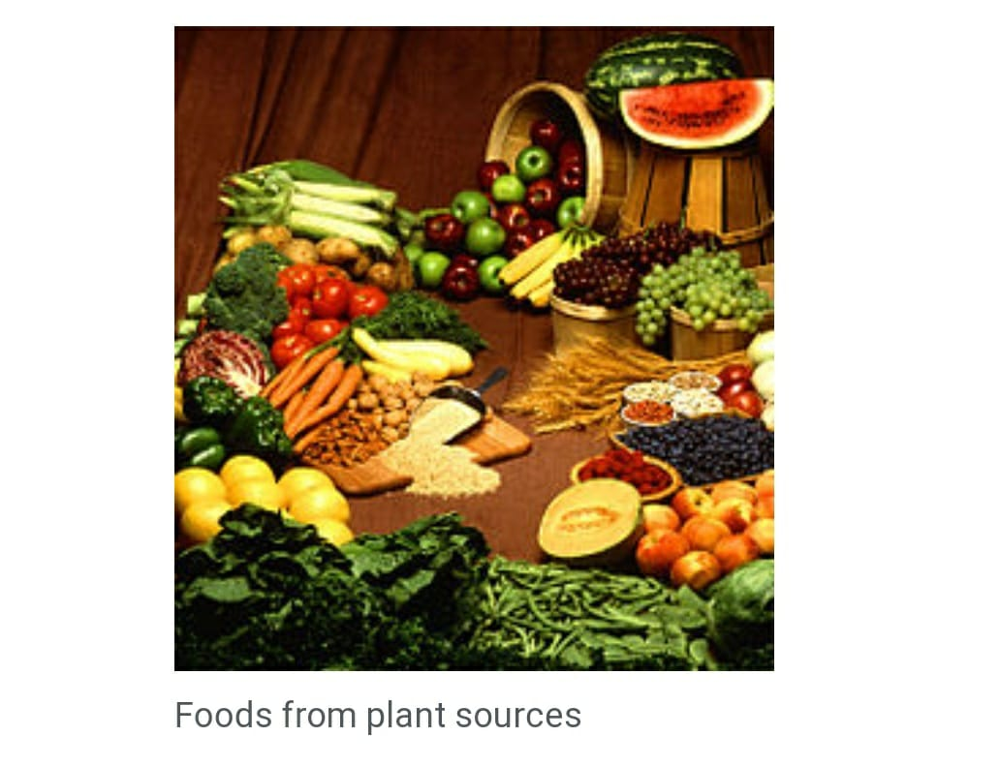
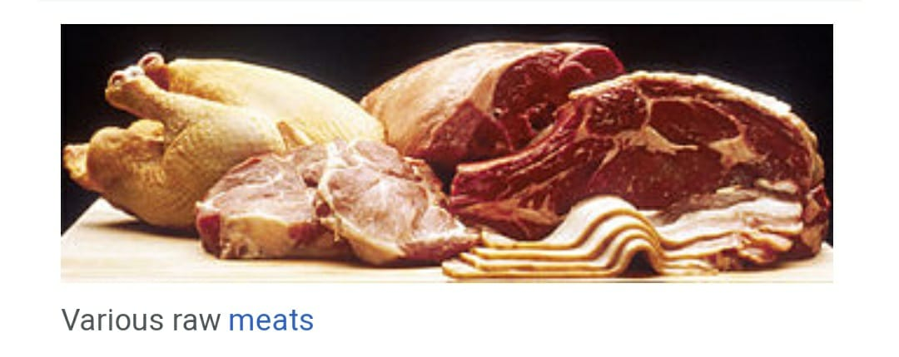

Food is any substance[1] consumed to provide nutritional support for an organism. Food is usually of plant, animal or fungal origin, and contains essential nutrients, such as carbohydrates, fats, proteins, vitamins, or minerals. The substance is ingested by an organism and assimilated by the organism's cells to provide energy, maintain life, or stimulate growth. Different species of animals have different feeding behaviours that satisfy the needs of their unique metabolisms, often evolved to fill a specific ecological niche within specific geographical contexts.
|  | Seeds of plants are a good source of food for animals, including humans, because they contain the nutrients necessary for the plant's initial growth, including many healthful fats, such as omega fats. In fact, the majority of food consumed by human beings are seed-based foods. Edible seeds include cereals (corn, wheat, rice, et cetera), legumes (beans, peas, lentils, et cetera), and nuts. Oilseeds are often pressed to produce rich oils - sunflower, flaxseed, rapeseed (including canola oil), sesame, et cetera.[9 |
|  |
Food products produced by animals include milk produced by mammary glands, which in many cultures is drunk or processed into dairy products (cheese, butter, etc.). In addition, birds and other animals lay eggs, which are often eaten, and bees produce honey, a reduced nectar from flowers, which is a popular sweetener in many cultures. Some cultures consume blood, sometimes in the form of blood sausage, as a thickener for sauces, or in a cured, salted form for times of food scarcity, and others use blood in stews such as jugged hare.[13] |